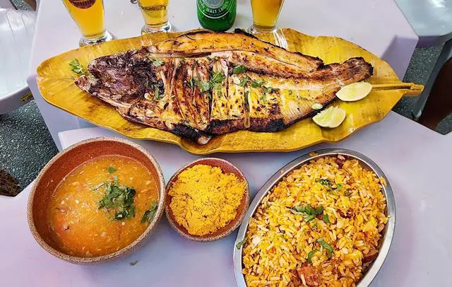

Culinaria


O Acre tem uma história marcada por lutas e diversidade cultural. No final do século XIX, a região foi palco da Revolução Acreana, quando seringueiros brasileiros lutaram pela integração do território ao Brasil. Em 1903, com o Tratado de Petrópolis, o Acre passou oficialmente a fazer parte do país. Hoje, o estado é reconhecido por sua rica biodiversidade, suas tradições culturais e a força de seu povo.